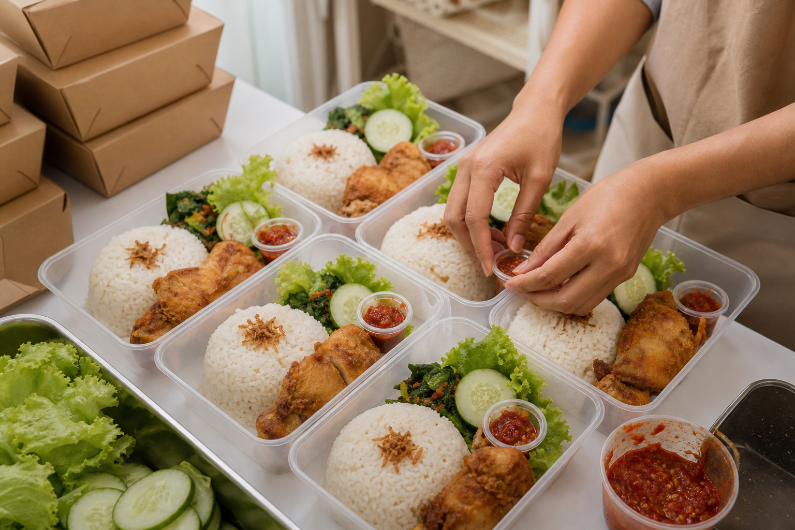
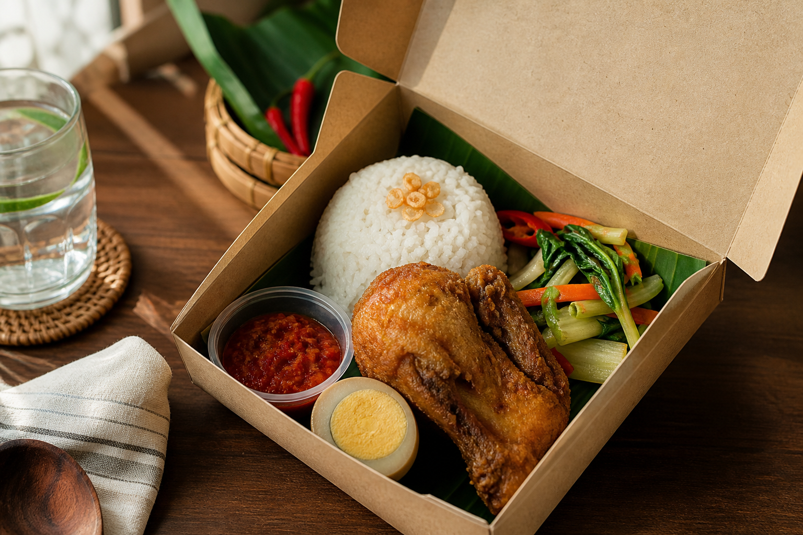

Nasi Box Harian
Katering rumahan • nasi box • snack box
Dapur Lestari membantu kebutuhan konsumsi acara keluarga, kantor kecil, pengajian, arisan, dan meeting harian dengan pilihan menu yang fleksibel dan harga bersahabat.

Paket harga
Nasi Box Basic
Nasi Box Komplit
Snack Box
Cara pesan
Jumlah porsi, tanggal acara, lokasi, dan preferensi menu.
Kami bantu sesuaikan menu dengan budget dan jenis acara.
DP dan detail pengiriman dikunci agar produksi aman.
Makanan dipacking rapi dan dikirim sesuai jam acara.
“Nasi box-nya rapi, lauknya masih hangat, dan responnya cepat. Cocok banget buat meeting kantor mendadak.”
— Rani, pelanggan kantor kecilArea layanan: Bekasi, Cikarang, Jakarta Timur, dan sekitarnya. Minimal order menyesuaikan lokasi.
Butuh konsumsi acara?
Ini demo website katering buatan Infiraft. Nomor WhatsApp masih dummy dan bisa diganti sesuai bisnis klien.
Tanya paket katering